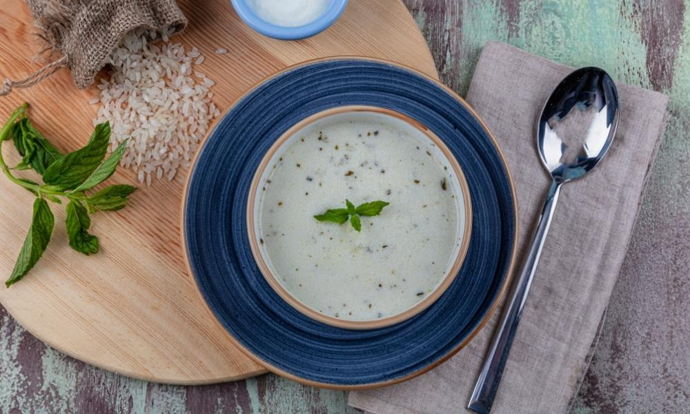

Tasty Traditional Turkish Soups
As the cold winds blow and the snow starts to settle, few dishes are more comforting than a hearty bowl of soup. Autumn and winter are traditionally soup seasons, but soup isn’t just seen as a cold-weather dish or appetiser in Türkiye. Soups have been served for centuries and play an important role in Turkish cuisine year-round. Here’s a look at a few of the most popular Turkish soups ideal for a theme night or to enjoy at a local restaurant or lokanta.
The history of Turkish soups
Soup is a satisfying dish enjoyed by all ages and social classes in Türkiye. Turkish soup, or çorba as it is known locally, appears on almost every traditional menu, and there’s a seemingly endless range of vegetable and meat-based varieties, the recipes lovingly developed and handed down through generations.
Many of the most popular Turkish soups date back to Ottoman times. During this period, soup became the go-to meal for those on low incomes and equally the prelude to the main for sultans. Off-cuts of meat, leftovers and homegrown produce were readily available and easy to combine into a tasty and filling soup, so it became a staple at most family tables. There are many local folklore references to soup, so much so that people developed phrases and idioms surrounding the dish that became used widely in everyday conversation. Turks generally believe a bowl of soup aids digestion and ‘softens’ the belly in readiness for any food to come, so there are even some fine regional breakfast and even fancy wedding varieties.
Popular varieties of Turkish soups
Most traditional soups in Türkiye are based on the ingredients and spices available on the local markets, so some tend to be seasonal or regional.
- Most Popular Turkish Soups
- Tarhana Soup
- Lentil Soup
- Spicy Lentil / Beautiful Bride Soup
- Highland Soup
- Tripe Soup
- Chicken and Vermicelli Soup
Tarhana Soup
As is the case in most countries, there are a couple of go-to soups that every kid grows up on then reaches for as an adult, when they’re feeling run down or fancy a bowl of something that reminds them of home. Tarhana is one such soup in Turkiye.
Tarhana is a traditional Anatolian soup packed full of vitamins and nutrients. It’s made from a mix of herbs, spices, vegetables and yoghurt that’s dried, mixed, and then crushed into a powder. You often see local homemakers sun-drying the ingredients during the late summer months, when they’re at their best, then making the powder and storing it safely away for future use. This way of prepping food for the store cupboard is practical and typically Anatolian, although the base spices and vegetables vary from region to region and chef to chef.
Tarhana soup is normally plant-based and mild as it’s often given to babies as a first food or to the sick as it’s easy on the stomach. Adults tend to spice it up on serving with red pepper flakes or extra herbs at the table. If you would like to try tarhana, you can buy bags of locally produced dried tarhana from village shops and local markets throughout Türkiye, or we can supply some with your provisions, it only takes around 10 minutes to reheat and serve.
Tarhana Soup Recipe
Ingredients
- 1 cup of powdered tarhana
- 7.5 cups hot broth or water
- 2 tablespoons of butter
- 1 teaspoon tomato paste
- 1 teaspoon of salt
- 1 teaspoon of black pepper
- 1 teaspoon of paprika
- 1 teaspoon of mint
- 2 cloves of garlic
Method
- Mix 1 cup of powder tarhana with 1.5 cups of warm broth (or water) and let it soften.
- Heat 2 tablespoons of butter in a deep saucepan. Add 2 cloves of crushed garlic and 1 teaspoon of tomato paste and fry for 2-3 minutes.
- Add 1 teaspoon of salt, pepper, paprika and 1 teaspoon of mint into the butter and mix.
- Add the tarhana you soaked in to butter which you fried with tomato paste, garlic and spices.
- Add the remaining 6 cups of hot water (or broth) and mix it constantly with a whisk to make the soup thicken.
- Serve the boiling soup hot without waiting. Enjoy your meal.